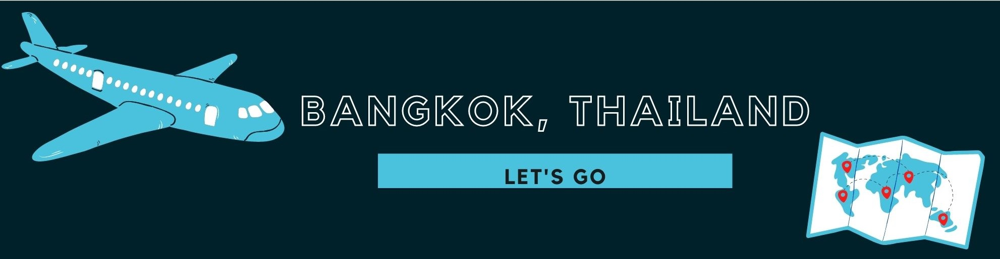
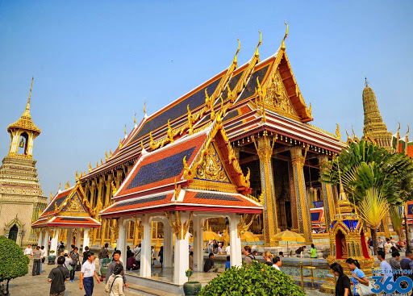
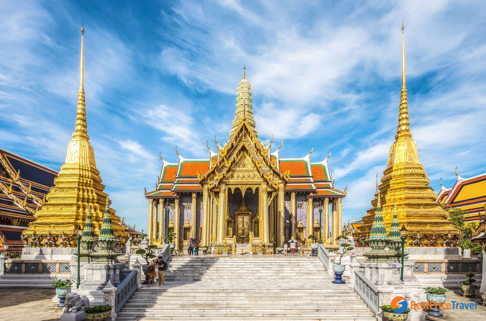
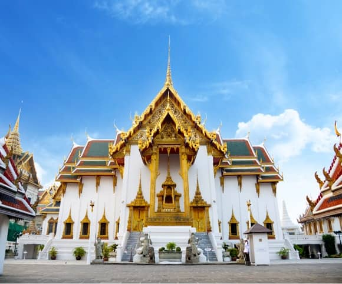
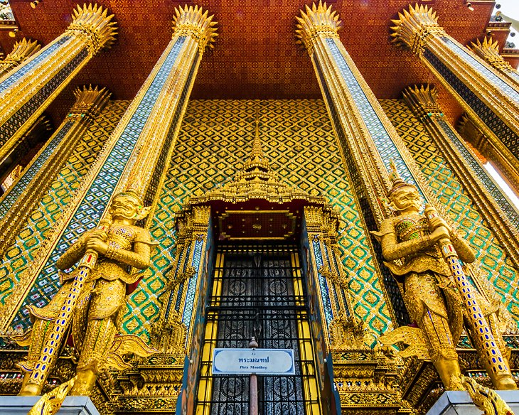

Grand Palace
The Grand Palace (Thai: พระบรมมหาราชวัง, RTGS: Phra Borom Maha Ratcha Wang) is a complex of buildings at the heart of Bangkok, Thailand.
The palace has been the official residenceof the Kings of Siam (and later Thailand) since 1782. The king, his court, and his royal government were based on the grounds of the palace until 1925.
King Bhumibol Adulyadej (Rama IX), resided at the Chitralada Royal Villa and his successor King Vajiralongkorn (Rama X) at the Amphorn Sathan Residential Hall, both in the Dusit Palace,
but the Grand Palace is still used for official events.
Several royal ceremonies and state functions are held within the walls of the palace every year.
The palace is one of the most popular tourist attractions in Thailand.
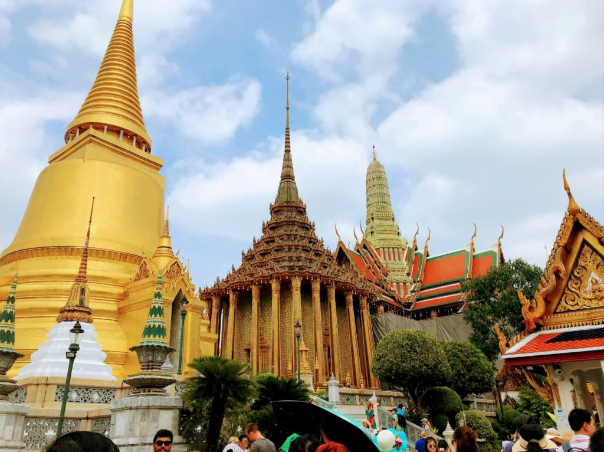
The Grand Palace
Rather than being a single structure, the Grand Palace is made up of numerous buildings, halls, pavilions set around open lawns, gardens and courtyards.
Its asymmetry and eclectic styles are due to its organic development, with additions and rebuilding being made by successive reigning kings over 200 years of history.
is divided into several quarters: the Temple of the Emerald Buddha; the Outer Court, with many public buildings; the Middle Court, including the Phra Maha Monthien Buildings,
the Phra Maha Prasat Buildings and the Chakri Maha Prasat Buildings; the Inner Court and the Siwalai Gardens quarter.
The Grand Palace is currently partially open to the public as a museum, but it remains a working palace, with several royal offices still situated inside.
There are 8 ways to get from Suvarnabhumi Airport (BKK) to Grand Palace by train, bus, taxi, car, shuttle or towncar.
The approximately time to get there is less than an hour if you ride in Taxi, Shuttle, Towncar and if Drive but is it more expensive,
and when you ride in Train, subway or bus you can get there more than an hour and it is inexpensive.
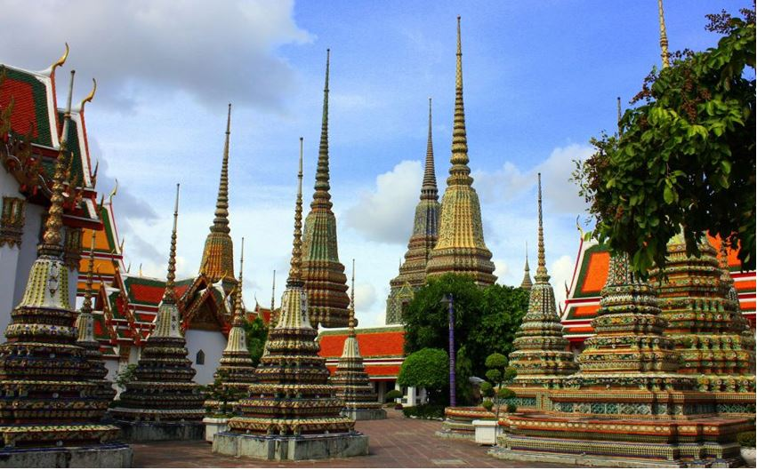
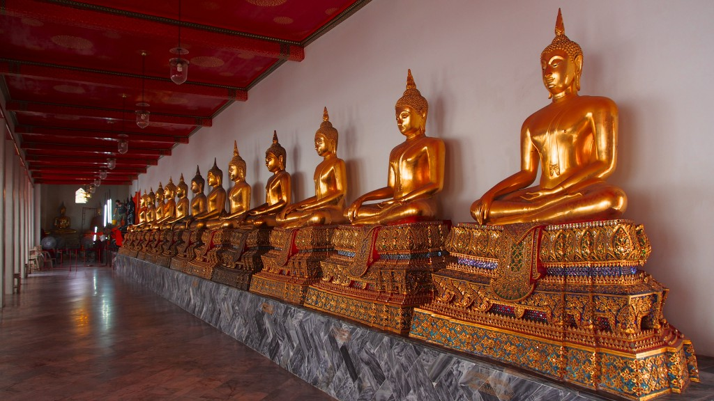
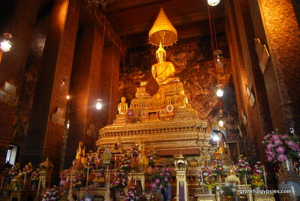
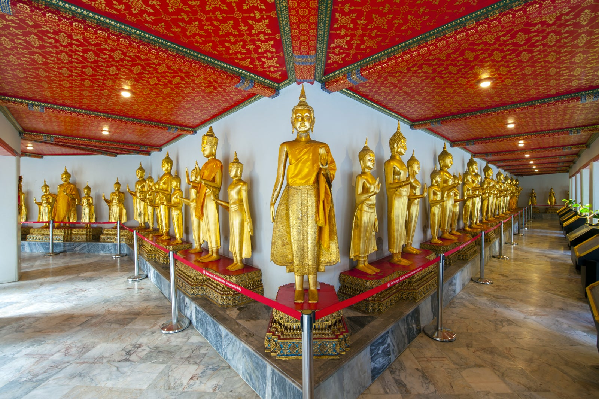
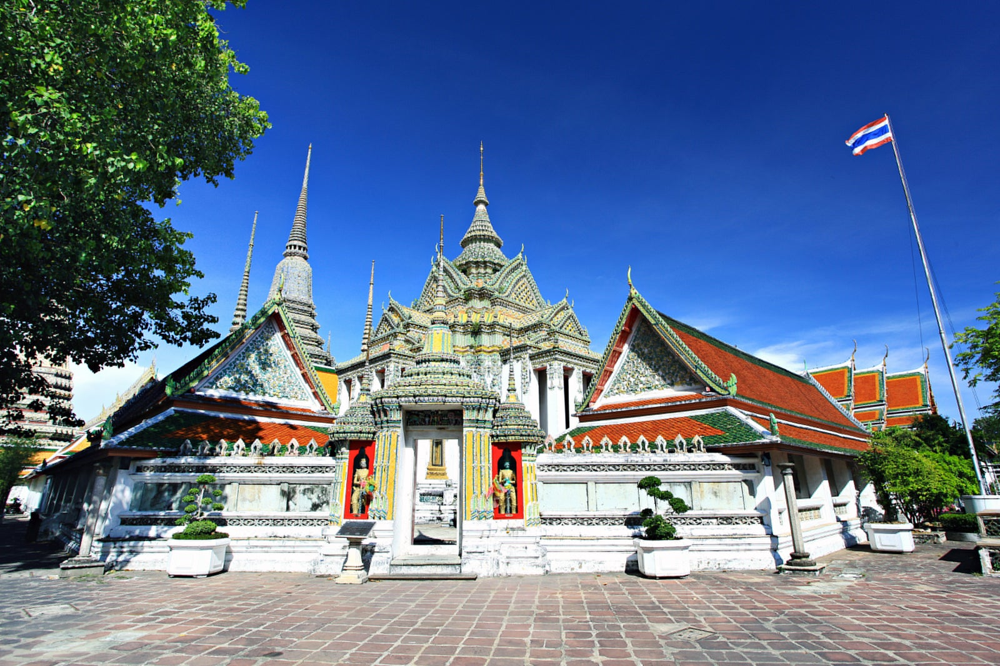
Wat Pho
Wat Pho (the Temple of the Reclining Buddha), or Wat Phra Chetuphon, is right behind the Temple of the Emerald Buddha – it’s a must-see for any first-time visitor to Bangkok.
As one of the largest temple complexes in the city, it’s famed for its giant reclining Buddha that is 46 metres long, covered in gold leaf.
Wat Pho, also spelled Wat Po, is a Buddhist temple complex in the Phra Nakhon District, Bangkok, Thailand. It is on Rattanakosin Island, directly south of the Grand Palace.
It’s an easy 10-minute walk between here and the Grand Palace.
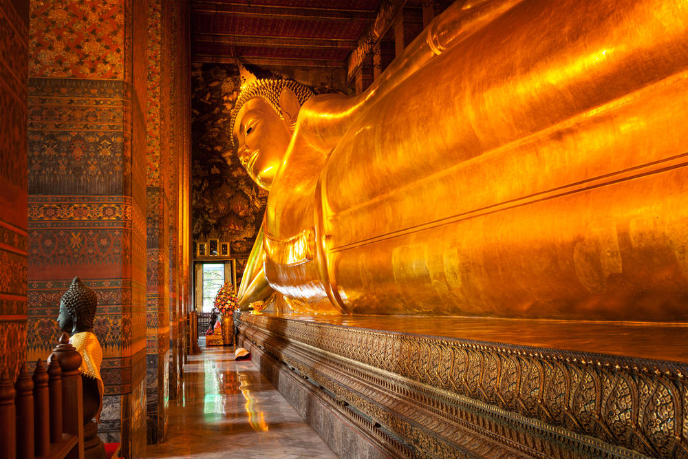
Inside the Wat Pho "Reclining Buddha"
The chapel and the reclining Buddha (Phra Buddhasaiyas, Thai: พระพุทธไสยาสน์) were built by Rama III in 1832.
The image of the reclining Buddha represents the entry of Buddha into Nirvana and the end of all reincarnations.
The posture of the image is referred to as sihasaiyas, the posture of a sleeping or reclining lion. The figure is 15 m high and 46 m long, and it is one of the largest Buddha statues in Thailand.
The figure has a brick core, which was modelled and shaped with plaster, then gilded.
The right arm of the Buddha supports the head with tight curls, which rests on two box-pillows encrusted with glass mosaics.
The soles of the feet of the Buddha are 3 m high and 4.5 m long, and inlaid with mother-of-pearl. They are each divided into 108 arranged panels, displaying the auspicious symbols by which Buddha can be identified, such as flowers, dancers, white elephants, tigers, and altar accessories.[10] At the center of each foot is a circle representing a chakra or 'energy point'. There are 108 bronze bowls in the corridor representing the 108 auspicious characters of Buddha.
Visitors may drop coins in these bowls as it is believed to bring good fortune, and it also helps the monks to maintain the wat.
There are 8 ways to get from Suvarnabhumi Airport (BKK) to Grand Palace by train, bus, taxi, car, shuttle or towncar.
The approximately time to get there is less than an hour if you ride in Taxi, Shuttle, Towncar and if Drive but is it more expensive,
and when you ride in Train, subway or bus you can get there more than an hour and it is inexpensive.
Go back to Map Page.